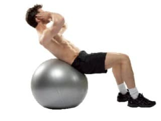

Welcome to Ejercicios de abdominales efectivos
Los ejercicios para abdominales más efectivos según la ciencia
2021.06.26 12:38One body, one life Fitness Lifestyle Sports News Entrenarme Compartir Entrenamiento
Los ejercicios para abdominales más efectivos según la ciencia
Todos soñamos con tener un vientre plano. Descubre cómo quemar grasa y fortalecer el abdomen con la tabla de ejercicios para abdominales que mejor se adapta a ti.
El trabajo de la zona abdominal es un tema muy recurrente, ya que todo el mundo tiene un especial interés en saber cómo adelgazar barriga y tener un abdomen definido hasta llegar, en el caso de muchas personas, a marcar la famosa “tableta de chocolate”.
Pero, antes de comenzar a mostrarte cuáles son los mejores ejercicios para trabajar esta zona, debemos primero diferenciar varias particularidades. Sin entrar en los detalles anatómicos profundamente, debemos reseñar que la zona abdominal se compone de tres partes: recto abdominal, oblicuo externo y oblicuo interno. Por otro lado, es importante recordar que antes de elegir un determinado tipo de ejercicios debemos preguntarnos cuál es el objetivo que queremos conseguir y, más aún, qué especificidad queremos conseguir en base a una disciplina deportiva.
Y si quieres quemar grasa de manera exprés, en Entrenarme queremos ayudarte con esta guía gratuita. ¡Descárgatela ahora!
Aunque a priori parezca que estas dos cuestiones van de la mano, no es del todo así. Existen ejercicios que activarán de una manera más directa el músculo que queremos implicar mientras que otros ejercicios, aún no implicando con tanta eficacia dicho músculo, serán más específicos y útiles para nuestro deporte o actividad.
Un buen ejemplo de esto es la típica flexión de tronco (el abdominal de toda la vida, el crunch) respecto al trabajo con rueda abdominal. En deportes de lucha, por ejemplo, aunque el segundo active más el recto abdominal, el primero tiene una mayor especificidad de cara a este tipo de disciplinas que implican flexiones de tronco para esquivar ciertos momentos críticos.
¿Quiere decir esto que debemos buscar siempre la eficacia y olvidarnos de la especificidad? Como todo en la vida los extremos nunca son buenos y en el caso de la actividad física y el deporte lo ideal es combinar ambos caminos ; es decir, buscar ejercicios que activen bien nuestra zona abdominal y combinarlos con otros ejercicios que sean específicos para nuestro deporte.
En base a los datos de Marchante, 2015 vamos a desglosar qué ejercicios de abdominales serían lo más adecuados para cada sección y, por supuesto, cómo realizarlos:
Dominadas
Rueda abdominal de rodillas
Rueda abdominal de pie
Crunch en fitball
Plancha con desplazamiento
Golpeos a rueda con rotación
Rotaciones ascendentes con polea
Levantamientos turcos
Imágenes extraídas de Marchante, 2015
Según este mismo autor: “la gran sorpresa de estos resultados es la alta activación del abdomen en las dominadas con lastre, hecho que viene a corroborar la importancia del entrenamiento funcional y el “core” en todos los ejercicios y no únicamente en ejercicios de “aislamiento” de abdomen”.
Por último la elección de estos ejercicios se ha realizado a través de la tabla citada por Marchate , 2015:
Por lo tanto, para concluir, la clave de un buen trabajo de la zona abdominal o el “core” radicará en la combinación de esta información con la especificidad de tu deporte , para ser así lo más efectivos posibles en dicho trabajo.
Contacta con Gabriel Garrido Blanca, el autor de este artículo, y él resolverá cualquier duda que puedas tener sobre cuál es la mejor tabla de ejercicios para abdominales en tu caso.
– Entrenador especialista en ciclismo
– Preparador físico de jugadores de Golf Profesional
– Técnico de actividad física en personas con fibromialgia
– Preparador físico en Frontenis
Compartir prev postCalcula tu fuerza máxima y sabrás con cuánto peso entrenar
next postTRX: 5 ejercicios básicos para empezar
Deja un comentario Cancelar respuesta
Entrenarme es el buscador de entrenadores personales y centros más grande del mundo.
